Productividad de la envasadora
Esta página enlista la productividad de la envasadora sobre todas las Frutas, Vegetales y Jengibre convertidas en Mermeladas y Encurtidos y Huevas en Huevas envejecidas o Caviar en envasadoras.
Las mermeladas y los encurtidos siempre se venden por mas que las frutas y/o vegetales usadas para hacerlas (excepto en el caso de Moras después de aprender la Sabiduría del oso). Las mermeladas y encurtidos son siempre de una calidad regular, así que el beneficio obtenido de el procesamiento de los objetos es mas bajo cuando se usan objetos de calidad iridio, y mas alto cuando se usan objetos de una calidad regular.
La tabla mostrada a continuación no toma en cuenta los efectos de las Profesiones de Labrador o Artesano, el cual reduce e incrementa el beneficio de un envasadora, respectivamente. Para visualizar el beneficio otorgado por estas profesiones, utiliza el enlace al principio de la página.
Tenga en cuenta que el tiempo de procesamiento de la envasadora es siempre 4000 minutos, con una excepción: Huevas de esturión produce Caviar en 6000 minutos en lugar de 4000.
Productividad (oro/minuto) = ([Precio de venta Procesado] - [Precio de venta del Objeto]) / [Tiempo de procesamiento]
Oro aprox. por día = Productividad (oro/minuto) * 1680 [1]
Tenga en cuenta que puede oprimir en el header de la columna para ordenar la gráfica priorizando esa columna, luego con Shift+Click en una segunda columna para comenzar un orden secundario
| Objeto | Tipo | Calidad | Precio de venta del Objeto | Precio de venta Procesado | Incremento en valor (Oro) | Productividad (oro/minuto) | Oro aprox. por día [1] |
|---|---|---|---|---|---|---|---|
| Veg | Normal | 150 | 350 | 200 | 0.050 | 80 | |
| Veg | 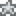 Plata | 187 | 350 | 163 | 0.041 | 66 | |
| Veg | 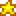 Oro | 225 | 350 | 125 | 0.031 | 50 | |
| Veg | 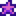 Iridio | 300 | 350 | 50 | 0.013 | 21 | |
| 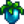 Fruta milenaria | Fruta | Normal | 550 | 1150 | 600 | 0.150 | 240 |
| Fruta milenaria | Fruta | Plata | 687 | 1150 | 463 | 0.116 | 186 |
| Fruta milenaria | Fruta | Oro | 825 | 1150 | 325 | 0.081 | 130 |
| Fruta milenaria | Fruta | Iridio | 1100 | 1150 | 50 | 0.013 | 21 |
| Fruta | Normal | 100 | 250 | 150 | 0.038 | 61 | |
| Fruta | Plata | 125 | 250 | 125 | 0.031 | 50 | |
| Fruta | Oro | 150 | 250 | 100 | 0.025 | 40 | |
| Fruta | Iridio | 200 | 250 | 50 | 0.013 | 21 | |
| Fruta | Normal | 50 | 150 | 100 | 0.025 | 40 | |
| Fruta | Plata | 62 | 150 | 88 | 0.022 | 35 | |
| Fruta | Oro | 75 | 150 | 75 | 0.019 | 30 | |
| Fruta | Iridio | 100 | 150 | 50 | 0.013 | 21 | |
| Veg | Normal | 160 | 370 | 210 | 0.053 | 85 | |
| Veg | Plata | 200 | 370 | 170 | 0.043 | 69 | |
| Veg | Oro | 240 | 370 | 130 | 0.033 | 53 | |
| Veg | Iridio | 320 | 370 | 50 | 0.013 | 21 | |
| Fruta | Normal | 150 | 350 | 200 | 0.050 | 80 | |
| Fruta | Plata | 187 | 350 | 163 | 0.041 | 66 | |
| Fruta | Oro | 225 | 350 | 125 | 0.031 | 50 | |
| Fruta | Iridio | 300 | 350 | 50 | 0.013 | 21 | |
| Veg | Normal | 100 | 250 | 150 | 0.038 | 61 | |
| Veg | Plata | 125 | 250 | 125 | 0.031 | 50 | |
| Veg | Oro | 150 | 250 | 100 | 0.025 | 40 | |
| Veg | Iridio | 200 | 250 | 50 | 0.013 | 21 | |
| Fruta | Normal | 20 | 90 | 70 | 0.018 | 29 | |
| Fruta | Plata | 25 | 90 | 65 | 0.016 | 26 | |
| Fruta | Oro | 30 | 90 | 60 | 0.015 | 24 | |
| Fruta | Iridio | 40 | 90 | 50 | 0.013 | 21 | |
| Fruta | Normal | 60 | 90 | 30 | 0.008 | 13 | |
| Fruta | Plata | 75 | 90 | 15 | 0.004 | 6 | |
| Fruta | Oro | 90 | 90 | 0 | 0 | 0 | |
| Fruta | Iridio | 120 | 90 | -30 | -0.008 | -13 | |
| Fruta | Normal | 50 | 150 | 100 | 0.025 | 40 | |
| Fruta | Plata | 62 | 150 | 88 | 0.022 | 35 | |
| Fruta | Oro | 75 | 150 | 75 | 0.019 | 30 | |
| Fruta | Iridio | 100 | 150 | 50 | 0.013 | 21 | |
| Veg | Normal | 80 | 210 | 130 | 0.033 | 53 | |
| Veg | Plata | 100 | 210 | 110 | 0.028 | 45 | |
| Veg | Oro | 120 | 210 | 90 | 0.023 | 37 | |
| Veg | Iridio | 160 | 210 | 50 | 0.013 | 21 | |
| Fruta | Normal | 75 | 200 | 125 | 0.031 | 50 | |
| Fruta | Plata | 93 | 200 | 107 | 0.027 | 43 | |
| Fruta | Oro | 112 | 200 | 88 | 0.022 | 35 | |
| Fruta | Iridio | 150 | 200 | 50 | 0.013 | 21 | |
| 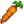 Zanahoria | Veg | Normal | 35 | 120 | 85 | 0.021 | 34 |
| Zanahoria | Veg | Plata | 43 | 120 | 77 | 0.019 | 30 |
| Zanahoria | Veg | Oro | 52 | 120 | 68 | 0.017 | 27 |
| Zanahoria | Veg | Iridio | 70 | 120 | 50 | 0.013 | 21 |
| Veg | Normal | 175 | 400 | 225 | 0.056 | 90 | |
| Veg | Plata | 218 | 400 | 182 | 0.046 | 74 | |
| Veg | Oro | 262 | 400 | 138 | 0.035 | 56 | |
| Veg | Iridio | 350 | 400 | 50 | 0.013 | 21 | |
| Fruta | Normal | 80 | 210 | 130 | 0.033 | 53 | |
| Fruta | Plata | 100 | 210 | 110 | 0.028 | 45 | |
| Fruta | Oro | 120 | 210 | 90 | 0.023 | 37 | |
| Fruta | Iridio | 160 | 210 | 50 | 0.013 | 21 | |
| Fruta | Normal | 100 | 250 | 150 | 0.038 | 61 | |
| Fruta | Plata | 125 | 250 | 125 | 0.031 | 50 | |
| Fruta | Oro | 150 | 250 | 100 | 0.025 | 40 | |
| Fruta | Iridio | 200 | 250 | 50 | 0.013 | 21 | |
| Veg | Normal | 50 | 150 | 100 | 0.025 | 40 | |
| Veg | Plata | 62 | 150 | 88 | 0.022 | 35 | |
| Veg | Oro | 75 | 150 | 75 | 0.019 | 30 | |
| Veg | Iridio | 100 | 150 | 50 | 0.013 | 21 | |
| Fruta | Normal | 75 | 200 | 125 | 0.031 | 50 | |
| Fruta | Plata | 93 | 200 | 107 | 0.027 | 43 | |
| Fruta | Oro | 112 | 200 | 88 | 0.022 | 35 | |
| Fruta | Iridio | 150 | 200 | 50 | 0.013 | 21 | |
| Fruta | Normal | 150 | 350 | 200 | 0.050 | 80 | |
| Fruta | Plata | 187 | 350 | 163 | 0.041 | 66 | |
| Fruta | Oro | 225 | 350 | 125 | 0.031 | 50 | |
| Fruta | Iridio | 300 | 350 | 50 | 0.013 | 21 | |
| Veg | Normal | 60 | 170 | 110 | 0.028 | 45 | |
| Veg | Plata | 75 | 170 | 95 | 0.024 | 38 | |
| Veg | Oro | 90 | 170 | 80 | 0.020 | 32 | |
| Veg | Iridio | 120 | 170 | 50 | 0.013 | 21 | |
| Veg | Normal | 90 | 230 | 140 | 0.035 | 56 | |
| Veg | Plata | 112 | 230 | 118 | 0.030 | 48 | |
| Veg | Oro | 135 | 230 | 95 | 0.024 | 38 | |
| Veg | Iridio | 180 | 230 | 50 | 0.013 | 21 | |
| Veg | Normal | 60 | 170 | 110 | 0.028 | 45 | |
| Veg | Plata | 75 | 170 | 95 | 0.024 | 38 | |
| Veg | Oro | 90 | 170 | 80 | 0.020 | 32 | |
| Veg | Iridio | 120 | 170 | 50 | 0.013 | 21 | |
| 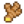 Jengibre | Recolección | Normal | 60 | 170 | 110 | 0.028 | 45 |
| Fruta | Normal | 80 | 210 | 130 | 0.033 | 53 | |
| Fruta | Plata | 100 | 210 | 110 | 0.028 | 45 | |
| Fruta | Oro | 120 | 210 | 90 | 0.023 | 37 | |
| Fruta | Iridio | 160 | 210 | 50 | 0.013 | 21 | |
| Veg | Normal | 40 | 130 | 90 | 0.023 | 37 | |
| Veg | Plata | 50 | 130 | 80 | 0.020 | 32 | |
| Veg | Oro | 60 | 130 | 70 | 0.018 | 29 | |
| Veg | Iridio | 80 | 130 | 50 | 0.013 | 21 | |
| Veg | Normal | 25 | 100 | 75 | 0.019 | 30 | |
| Veg | Plata | 31 | 100 | 69 | 0.017 | 27 | |
| Veg | Oro | 37 | 100 | 63 | 0.016 | 26 | |
| Veg | Iridio | 50 | 100 | 50 | 0.013 | 21 | |
| Fruta | Normal | 40 | 130 | 90 | 0.023 | 37 | |
| Fruta | Plata | 50 | 130 | 80 | 0.020 | 32 | |
| Fruta | Oro | 60 | 130 | 70 | 0.018 | 29 | |
| Fruta | Iridio | 80 | 130 | 50 | 0.013 | 21 | |
| Veg | Normal | 110 | 270 | 160 | 0.040 | 64 | |
| Veg | Plata | 137 | 270 | 133 | 0.033 | 53 | |
| Veg | Oro | 165 | 270 | 105 | 0.026 | 42 | |
| Veg | Iridio | 220 | 270 | 50 | 0.013 | 21 | |
| 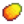 Mango | Fruta | Normal | 130 | 310 | 180 | 0.045 | 72 |
| Mango | Fruta | Plata | 162 | 310 | 148 | 0.037 | 59 |
| Mango | Fruta | Oro | 195 | 310 | 115 | 0.029 | 46 |
| Mango | Fruta | Iridio | 260 | 310 | 50 | 0.013 | 21 |
| Fruta | Normal | 250 | 550 | 300 | 0.075 | 120 | |
| Fruta | Plata | 312 | 550 | 238 | 0.060 | 96 | |
| Fruta | Oro | 375 | 550 | 175 | 0.044 | 70 | |
| Fruta | Iridio | 500 | 550 | 50 | 0.013 | 21 | |
| Fruta | Normal | 100 | 250 | 150 | 0.038 | 61 | |
| Fruta | Plata | 125 | 250 | 125 | 0.031 | 50 | |
| Fruta | Oro | 150 | 250 | 100 | 0.025 | 40 | |
| Fruta | Iridio | 200 | 250 | 50 | 0.013 | 21 | |
| Veg | Normal | 35 | 120 | 85 | 0.021 | 34 | |
| Veg | Plata | 43 | 120 | 77 | 0.019 | 30 | |
| Veg | Oro | 52 | 120 | 68 | 0.017 | 27 | |
| Veg | Iridio | 70 | 120 | 50 | 0.013 | 21 | |
| Fruta | Normal | 140 | 330 | 190 | 0.048 | 77 | |
| Fruta | Plata | 175 | 330 | 155 | 0.039 | 62 | |
| Fruta | Oro | 210 | 330 | 120 | 0.030 | 48 | |
| Fruta | Iridio | 280 | 330 | 50 | 0.013 | 21 | |
| 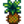 Piña | Fruta | Normal | 300 | 650 | 350 | 0.088 | 141 |
| Piña | Fruta | Plata | 375 | 650 | 275 | 0.069 | 110 |
| Piña | Fruta | Oro | 450 | 650 | 200 | 0.050 | 80 |
| Piña | Fruta | Iridio | 600 | 650 | 50 | 0.013 | 21 |
| Fruta | Normal | 140 | 330 | 190 | 0.048 | 77 | |
| Fruta | Plata | 175 | 330 | 155 | 0.039 | 62 | |
| Fruta | Oro | 210 | 330 | 120 | 0.030 | 48 | |
| Fruta | Iridio | 280 | 330 | 50 | 0.013 | 21 | |
| Veg | Normal | 80 | 210 | 130 | 0.033 | 53 | |
| Veg | Plata | 100 | 210 | 110 | 0.028 | 45 | |
| Veg | Oro | 120 | 210 | 90 | 0.023 | 37 | |
| Veg | Iridio | 160 | 210 | 50 | 0.013 | 21 | |
| Veg | Normal | 320 | 690 | 370 | 0.093 | 149 | |
| Veg | Plata | 400 | 690 | 290 | 0.073 | 117 | |
| Veg | Oro | 480 | 690 | 210 | 0.053 | 85 | |
| Veg | Iridio | 640 | 690 | 50 | 0.013 | 21 | |
| Fruta | Normal | 1 | 52 | 51 | 0.013 | 21 | |
| Veg | Normal | 90 | 230 | 140 | 0.035 | 56 | |
| Veg | Plata | 112 | 230 | 118 | 0.030 | 48 | |
| Veg | Oro | 135 | 230 | 95 | 0.024 | 38 | |
| Veg | Iridio | 180 | 230 | 50 | 0.013 | 21 | |
| Veg | Normal | 260 | 570 | 310 | 0.078 | 125 | |
| Veg | Plata | 325 | 570 | 245 | 0.061 | 98 | |
| Veg | Oro | 390 | 570 | 180 | 0.045 | 72 | |
| Veg | Iridio | 520 | 570 | 50 | 0.013 | 21 | |
| Fruta | Normal | 220 | 490 | 270 | 0.068 | 109 | |
| Fruta | Plata | 275 | 490 | 215 | 0.054 | 86 | |
| Fruta | Oro | 330 | 490 | 160 | 0.040 | 64 | |
| Fruta | Iridio | 440 | 490 | 50 | 0.013 | 21 | |
| Fruta | Normal | 5 | 60 | 55 | 0.014 | 22 | |
| Fruta | Plata | 6 | 60 | 54 | 0.014 | 22 | |
| Fruta | Oro | 7 | 60 | 53 | 0.013 | 21 | |
| Fruta | Iridio | 10 | 60 | 50 | 0.013 | 21 | |
| Fruta | Normal | 15 | 60 | 45 | 0.011 | 18 | |
| Fruta | Plata | 18 | 60 | 42 | 0.011 | 18 | |
| Fruta | Oro | 21 | 60 | 39 | 0.010 | 16 | |
| Fruta | Iridio | 30 | 60 | 30 | 0.008 | 13 | |
| Fruta | Normal | 80 | 210 | 130 | 0.033 | 53 | |
| Fruta | Plata | 100 | 210 | 110 | 0.028 | 45 | |
| Fruta | Oro | 120 | 210 | 90 | 0.023 | 37 | |
| Fruta | Iridio | 160 | 210 | 50 | 0.013 | 21 | |
| Fruta | Normal | 750 | 1550 | 800 | 0.200 | 320 | |
| Fruta | Plata | 937 | 1550 | 613 | 0.153 | 245 | |
| Fruta | Oro | 1125 | 1550 | 425 | 0.106 | 170 | |
| Fruta | Iridio | 1500 | 1550 | 50 | 0.013 | 21 | |
| Fruta | Normal | 120 | 290 | 170 | 0.043 | 69 | |
| Fruta | Plata | 150 | 290 | 140 | 0.035 | 56 | |
| Fruta | Oro | 180 | 290 | 110 | 0.028 | 45 | |
| Fruta | Iridio | 240 | 290 | 50 | 0.013 | 21 | |
| Veg | Normal | 100 | 250 | 150 | 0.038 | 61 | |
| Veg | Plata | 125 | 250 | 125 | 0.031 | 50 | |
| Veg | Oro | 150 | 250 | 100 | 0.025 | 40 | |
| Veg | Iridio | 200 | 250 | 50 | 0.013 | 21 | |
| Veg | Normal | 50 | 150 | 100 | 0.025 | 40 | |
| Veg | Normal | 60 | 170 | 110 | 0.028 | 45 | |
| Veg | Plata | 75 | 170 | 95 | 0.024 | 38 | |
| Veg | Oro | 90 | 170 | 80 | 0.020 | 32 | |
| Veg | Iridio | 120 | 170 | 50 | 0.013 | 21 | |
| Veg | Normal | 30 | 110 | 80 | 0.020 | 32 | |
| Veg | Plata | 37 | 110 | 73 | 0.018 | 29 | |
| Veg | Oro | 45 | 110 | 65 | 0.016 | 26 | |
| Veg | Iridio | 60 | 110 | 50 | 0.013 | 21 | |
| Veg | Normal | 25 | 100 | 75 | 0.019 | 30 | |
| Veg | Plata | 31 | 100 | 69 | 0.017 | 27 | |
| Veg | Oro | 37 | 100 | 63 | 0.016 | 26 | |
| Veg | Iridio | 50 | 100 | 50 | 0.013 | 21 | |
| Fruta | Normal | 80 | 210 | 130 | 0.033 | 53 | |
| Fruta | Plata | 100 | 210 | 110 | 0.028 | 45 | |
| Fruta | Oro | 120 | 210 | 90 | 0.023 | 37 | |
| Fruta | Iridio | 160 | 210 | 50 | 0.013 | 21 | |
| Veg | Normal | 160 | 370 | 210 | 0.053 | 85 | |
| Veg | Plata | 200 | 370 | 170 | 0.043 | 69 | |
| Veg | Oro | 240 | 370 | 130 | 0.033 | 53 | |
| Veg | Iridio | 320 | 370 | 50 | 0.013 | 21 | |
| Huevas | Normal | 67 | 134 | 67 | 0.017 | 27 | |
| Huevas | Normal | 45 | 90 | 45 | 0.011 | 18 | |
| 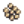 Huevas de Pez gota | Huevas | Normal | 280 | 560 | 280 | 0.070 | 112 |
| 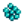 Huevas de Pez disco | Huevas | Normal | 90 | 180 | 90 | 0.023 | 37 |
| Huevas | Normal | 52 | 104 | 52 | 0.013 | 21 | |
| 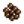 Huevas de Siluro | Huevas | Normal | 67 | 134 | 67 | 0.017 | 27 |
| Huevas de Carpa | Huevas | Normal | 45 | 90 | 45 | 0.011 | 18 |
| 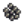 Huevas de Pez gato | Huevas | Normal | 130 | 260 | 130 | 0.033 | 53 |
| Huevas de Barbo | Huevas | Normal | 55 | 110 | 55 | 0.014 | 22 |
| 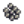 Huevas de Berberecho | Huevas | Normal | 55 | 110 | 55 | 0.014 | 22 |
| 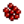 Huevas de Cangrejo | Huevas | Normal | 80 | 160 | 80 | 0.020 | 32 |
| Huevas de Cangrejo de río | Huevas | Normal | 67 | 134 | 67 | 0.017 | 27 |
| 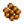 Huevas de Dorado | Huevas | Normal | 80 | 160 | 80 | 0.020 | 32 |
| 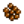 Huevas de Anguila | Huevas | Normal | 72 | 144 | 72 | 0.018 | 29 |
| Huevas de Platija | Huevas | Normal | 80 | 160 | 80 | 0.020 | 32 |
| 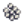 Huevas de Pez fantasma | Huevas | Normal | 52 | 104 | 52 | 0.013 | 21 |
| Huevas de Fletán | Huevas | Normal | 70 | 140 | 70 | 0.018 | 29 |
| Huevas | Normal | 45 | 90 | 45 | 0.011 | 18 | |
| Huevas | Normal | 280 | 560 | 280 | 0.070 | 112 | |
| 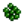 Huevas de Perca | Huevas | Normal | 80 | 160 | 80 | 0.020 | 32 |
| Huevas de Anguila de lava | Huevas | Normal | 380 | 760 | 380 | 0.095 | 152 |
| Huevas de Bacalao largo | Huevas | Normal | 90 | 180 | 90 | 0.023 | 37 |
| Huevas de Pez león | Huevas | Normal | 80 | 160 | 80 | 0.020 | 32 |
| Huevas de Langosta | Huevas | Normal | 90 | 180 | 90 | 0.023 | 37 |
| 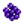 Huevas de Carpa de medianoche | Huevas | Normal | 105 | 210 | 105 | 0.026 | 42 |
| Huevas de Mejillón | Huevas | Normal | 45 | 90 | 45 | 0.011 | 18 |
| Huevas de Pulpo | Huevas | Normal | 105 | 210 | 105 | 0.026 | 42 |
| Huevas de Ostra | Huevas | Normal | 50 | 100 | 50 | 0.013 | 21 |
| Huevas de Cachuelo | Huevas | Normal | 57 | 114 | 57 | 0.014 | 22 |
| Huevas de Bígaro | Huevas | Normal | 40 | 80 | 40 | 0.010 | 16 |
| Huevas de Sauri | Huevas | Normal | 80 | 160 | 80 | 0.020 | 32 |
| Huevas de Pez globo | Huevas | Normal | 130 | 260 | 130 | 0.033 | 53 |
| Huevas de Trucha arcoíris | Huevas | Normal | 62 | 124 | 62 | 0.016 | 26 |
| Huevas de Salmonete | Huevas | Normal | 67 | 134 | 67 | 0.017 | 27 |
| Huevas de Pargo colorado | Huevas | Normal | 55 | 110 | 55 | 0.014 | 22 |
| 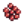 Huevas de Salmón | Huevas | Normal | 67 | 134 | 67 | 0.017 | 27 |
| Huevas de Lenguado | Huevas | Normal | 67 | 134 | 67 | 0.017 | 27 |
| Huevas | Normal | 50 | 100 | 50 | 0.013 | 21 | |
| Huevas de Carpa escorpión | Huevas | Normal | 105 | 210 | 105 | 0.026 | 42 |
| Huevas de Pepino de mar | Huevas | Normal | 67 | 134 | 67 | 0.017 | 27 |
| 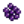 Huevas de Erizo de mar | Huevas | Normal | 110 | 220 | 110 | 0.028 | 45 |
| Huevas de Sábalo | Huevas | Normal | 60 | 120 | 60 | 0.015 | 24 |
| 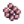 Huevas de Gamba | Huevas | Normal | 60 | 120 | 60 | 0.015 | 24 |
| Huevas de Babolín | Huevas | Normal | 80 | 160 | 80 | 0.020 | 32 |
| Huevas de Lubina | Huevas | Normal | 55 | 110 | 55 | 0.014 | 22 |
| Huevas de Caracol | Huevas | Normal | 62 | 124 | 62 | 0.016 | 26 |
| Huevas | Normal | 140 | 280 | 140 | 0.035 | 56 | |
| Huevas de Mantarraya | Huevas | Normal | 120 | 240 | 120 | 0.030 | 48 |
| Huevas de Pez piedra | Huevas | Normal | 180 | 360 | 180 | 0.045 | 72 |
| 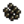 Huevas de Esturión | Huevas | Normal | 130 | 500 | 370 | 0.062 | 99 |
| Huevas de Pez sol | Huevas | Normal | 45 | 90 | 45 | 0.011 | 18 |
| Huevas de Superpepino | Huevas | Normal | 155 | 310 | 155 | 0.039 | 62 |
| Huevas de Trucha tigre | Huevas | Normal | 105 | 210 | 105 | 0.026 | 42 |
| Huevas de Tilapia | Huevas | Normal | 67 | 134 | 67 | 0.017 | 27 |
| Huevas | Normal | 80 | 160 | 80 | 0.020 | 32 | |
| Huevas de Salmón sombrío | Huevas | Normal | 105 | 210 | 105 | 0.026 | 42 |
| Huevas de Lucio | Huevas | Normal | 82 | 164 | 82 | 0.021 | 34 |
| Huevas de Muyu | Huevas | Normal | 67 | 134 | 67 | 0.017 | 27 |
Notas
Cada día tiene 1600 minutos de tiempo de procesamiento. De 02:00 a 06:00, las máquinas procesan a 100 minutos por hora. Durante el resto del día, las máquinas procesan a 60 minutos por hora.
Entonces, (4 × 100) + (20 × 60) = 1600 minutos de tiempo de procesamiento por día.